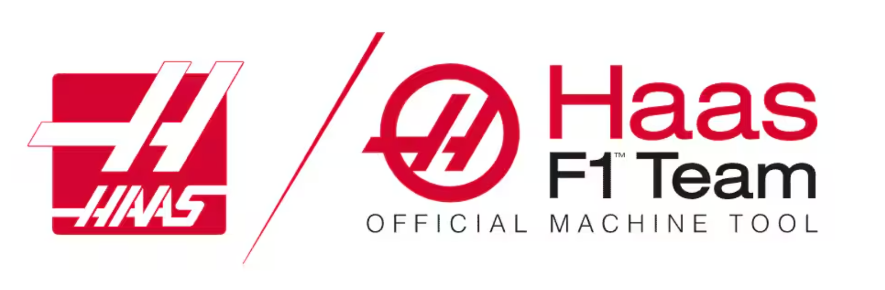

Haas Automation — Mechanical Engineering Intern
Summer 2024

Overview
In Summer 2024, I worked as a Mechanical Engineering Intern at Haas Automation, the world’s largest builder of CNC machine tools. My role centered on designing, prototyping, and implementing an HID-controlled access system to secure high-end machines, while contributing to manufacturing efficiency and quality validation.
Key Contributions
Access Control System Design
- Designed and implemented an HID card-activated solenoid locking mechanism to control machine access.
- Integrated electrical components (Arduino, HID scanner, relay, solenoid) with custom brackets and a lock extension bar.
- Modeled parts in SolidWorks and used in-house 3D printing, plasma cutting, and bandsaw machining to prototype and assemble.
Manufacturing Support & Efficiency
- Enhanced machine safety and usability by designing components that prevent unauthorized operation without disrupting workflows.
- Iterated designs with machinists and technicians to ensure fit, manufacturability, and serviceability within existing enclosures.
Inspection & Validation
- Performed dimensional inspections of fixtures and manufactured components against engineering drawings.
- Documented discrepancies, coordinated with engineers, and verified that redesigns met tolerance and quality requirements.
Cross-Functional Collaboration
- Partnered with engineers, machinists, and technicians to integrate mechanical and electrical subsystems into a functional prototype.
- Presented updates and design trade-offs to engineering leadership, outlining a path for broader deployment across Haas equipment.